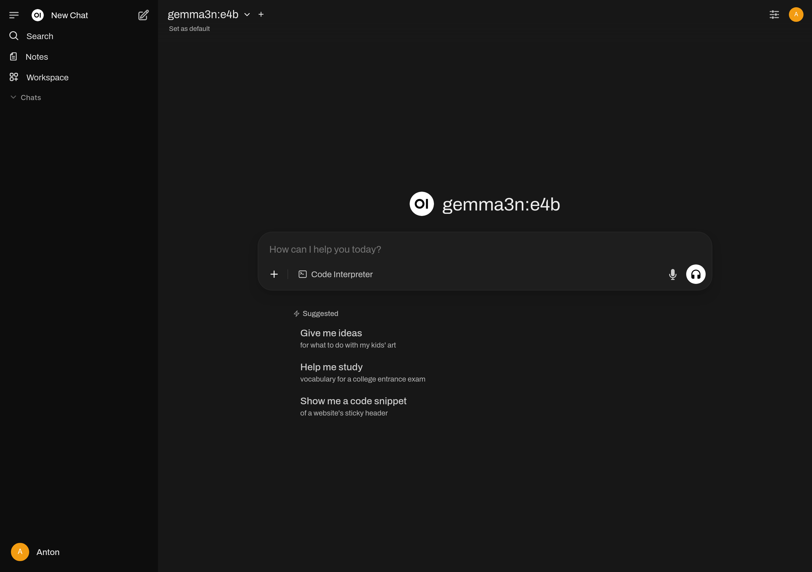

Open WebUI в Podman
В предыдущей заметке мы уже запустили Ollama в Podman. Но, CLI от Ollama не даст использовать многие плюсы моделей, вроде распознания образов с картинок. Кроме того, банально неудобно смотреть на вывод без подсветки синтаксиса и т.п.
Как бы это не было странно, среди Open Source и Self Hosted решений в этой стезе не так много продуктов. Самый популярный – Open WebUI, запустим его в Podman.
Первым шагом забираем свежий image с хостинга GitHub (ghcr.io).
$ podman pull ghcr.io/open-webui/open-webui:main
Trying to pull ghcr.io/open-webui/open-webui:main...
Getting image source signatures
Copying blob 4f4fb700ef54 skipped: already exists
Copying blob 483d0dd37518 skipped: already exists
Copying blob 471797cdda8c skipped: already exists
Copying blob 02a5d22e0d6f skipped: already exists
Copying blob d735c6810219 skipped: already exists
Copying blob eb54bd960342 skipped: already exists
Copying blob 1e80ef81ce95 skipped: already exists
Copying blob 3da95a905ed5 skipped: already exists
Copying blob dc06c47d3f8d skipped: already exists
Copying blob ea7e6d3e0aef skipped: already exists
Copying blob bbb7d449cf1f done
Copying blob b60ff2a71e86 done
Copying blob 838a5ef21014 done
Copying blob 72b8ccfd4120 done
Copying blob 4f4fb700ef54 skipped: already exists
Copying blob 01c7ca3659de done
Copying config 21bb7e0892 done
Writing manifest to image destination
Storing signatures
21bb7e0892cfbfaa64f9bc67ee83be1d79b1e062e946394396fded7f03a54987
$ podman image ls
REPOSITORY TAG IMAGE ID CREATED SIZE
ghcr.io/open-webui/open-webui main 21bb7e0892cf 42 hours ago 4.84 GB
docker.io/ollama/ollama rocm d466fc07e32e 12 days ago 6.42 GB
И в очередной раз, довольно большой образ. Но что поделать… Для первого запуска контейнера, пользуемся немного модифицированной командой. Я убрал из команды в доках --restart always и добавил порт локальной Ollama (11434). Да, к слову, для полноценного использования обязательно нужно запустить и Ollama!
$ podman start ollama
ollama
$ podman run -d \
-p 3000:8080 \
-e 'OLLAMA_BASE_URL=http://host.containers.internal:11434' \
-v open-webui:/app/backend/data \
--name open-webui \
ghcr.io/open-webui/open-webui:main
270f23c5c172b1debc64c1a86de58b6a263c0a11c98fb30f8f1ff5c4a89a8f02
Заходим на localhost:3000 и видим там интерфейс настройки. Заполнив все поля, создаём аккаунт администратора. Заполнять реальный E-mail вовсе не обязательно, можно придумать любой. Я просто пользуюсь форматом user@hostname.local. Создав администратора, попадаем в простой промт-интерфейс.

Дальше я рекомендую самостоятельно покопаться в UI. Описать всё мне будет тяжело и это – однозначно лишнее для фокуса этой заметки.
Чтобы остановить Open WebUI, пользуемся podman stop. Не забывайте про Ollama!
$ podman stop open-webui ollama
open-webui
ollama
Чтобы запустить снова, пользуемся podman start. Стартуем вместе с Ollama.
$ podman start ollama open-webui
ollama
open-webui
На этом всё, Ollama и Open WebUI работают, промптим! :)